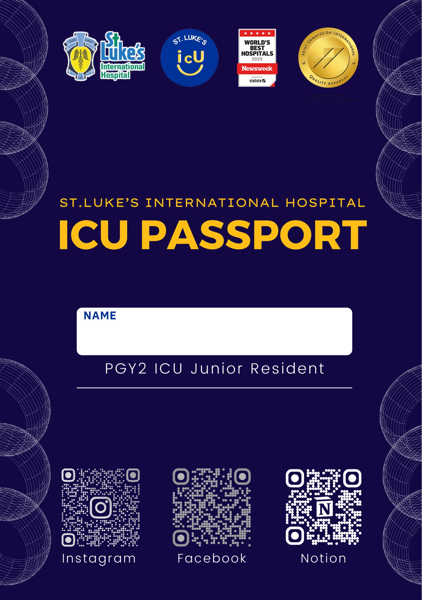
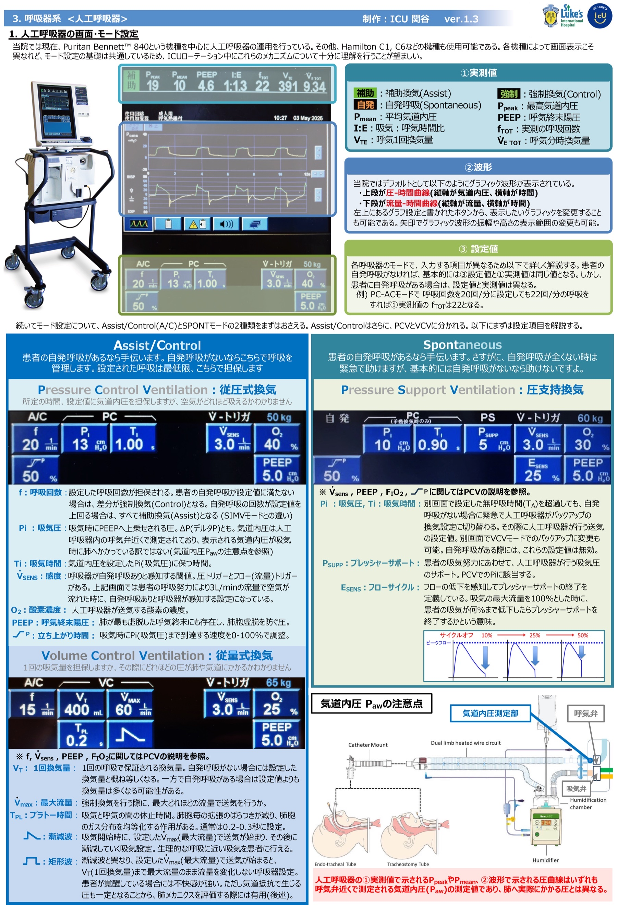
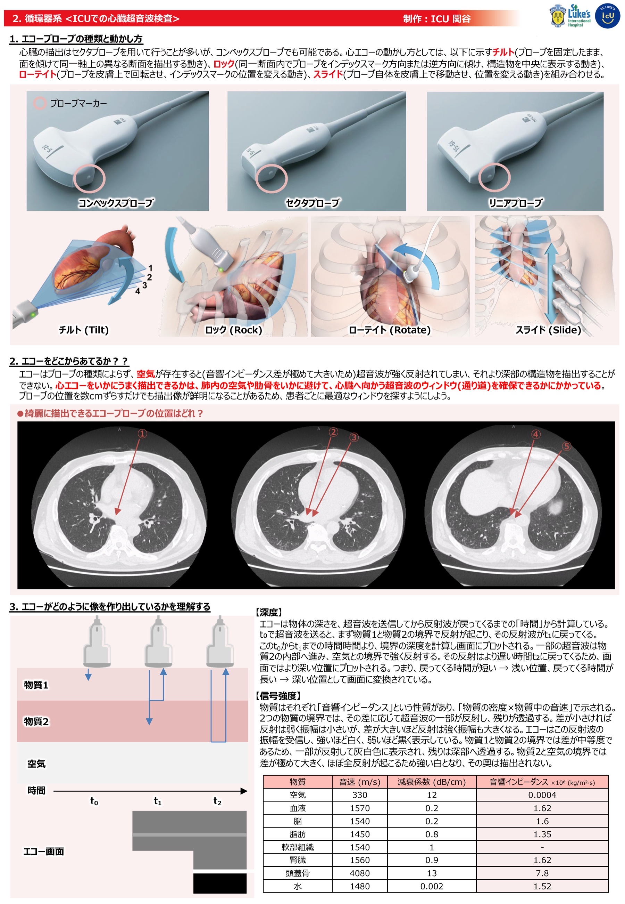

患者の個人情報取り扱いには十分ご注意ください。このページはICUローテーター向けの情報提供ページです。最新の情報は担当指導医・スタッフにご確認ください。レイアウトはPCデスクトップ用に最適化しています。


ICUローテーション中は学習のモチベーションを高める4種類のミッションを用意。詳細はこちらから



ICU関連の最新ガイドライン・注目論文を臓器系統ごとに整理。原著PDFの内容のみに基づいた要約ページ集です。
内科外来で遭遇する疾患の最新ガイドライン・注目論文を臓器系統ごとに整理した要約ページ集です。
収録済みの論文・ガイドラインの知見を疾患ごとに横断的に統合した総説ページ集です。
病棟業務で生じた疑問について吉田先生と一緒に解決するコーナーです




12 項目の急性生理学的スコア + 年齢 + 慢性疾患を入力。合計 0–71 点と予測病院死亡率を即座に表示。
研修医向け。意識・鎮静・鎮痛・せん妄などをクリックで入力→ そのままカルテに貼り付けられるサマリーを自動生成。現在は神経系（PADIS）MVP。
RASS → Feature 1〜4 の判定ツリー。SAVEAHAART テスト・思考混乱4問+動作課題に従って陽性／陰性／評価不能を自動判定。
総ビリルビン・アルブミン・PT/INR・腹水・肝性脳症の 5 項目を各 1〜3 点で評価。合計 5〜15 点で Class A / B / C を自動分類、参考予後（1 年・2 年生存率）も表示。
JAS 2022ガイドライン準拠。患者のリスク区分を3ステップで選ぶだけで、至適LDL-C・non-HDL-C目標値を即座に表示します。
−5（昏睡）〜 +4（闘争）の 10 段階。タップで選択し、各レベルの管理コメント・目標範囲（−2〜0）も表示。
病棟記載部・ICU記載部・要請基準・原因・介入・転帰までフォームで選択 → そのままカルテに貼れる対応記録テンプレートを自動生成。
JAMA 2025 Ranzani 改訂版。呼吸・凝固・肝・循環・脳・腎の 6 臓器ごとに点数表示、合計 0–24 点。
オフライン動作。略語を自動でスペルアウトし、聖路加公式リスト・禁止表記もチェックします。
体重・単位数を入力するだけで予測 ΔHb・ΔPlt・Δ凝固因子活性を算出。輸血前値も入力すれば輸血後 Hb／Plt／Fib を表示。

3段階で進めましょう：
詳細は ICU入室時のTo Do List を参照してください。
ICUのルール も併せて確認してください。
1患者あたり5〜7分を目標に、冗長な内容は削ぎましょう：
詳細は ICUカンファレンス ページを参照してください。